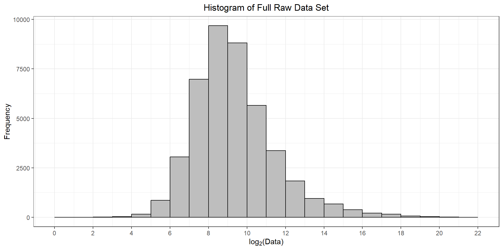
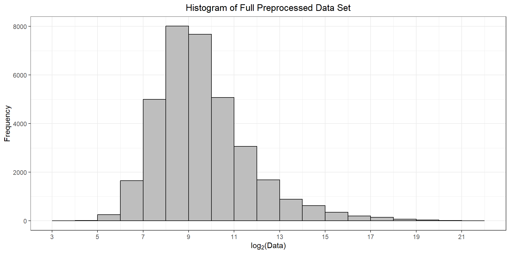

| Condition | N |
|---|---|
| ENR | 3 |
| ENRPlus | 3 |
| ABC | 3 |
UConn Statistical Consulting Services
2026-03-18
NOTE: This file is available in the Day 3 folder of this workshop’s OneDrive
To develop a flexible, customizable analysis pipeline for PMF users for use with proteomics experiments:
We want analysis choices to be as transparent as possible
Aim to be able to conduct analysis from start to finish within an integrated platform:
Set of plasma samples that were either not enriched (non-depleted), or enriched by one of 3 different bead types from various vendors:
| Condition | N |
|---|---|
| ENR | 3 |
| ENRPlus | 3 |
| ABC | 3 |

Summary of Full Data Signals (Raw):
Min. 1st Qu. Median Mean 3rd Qu. Max.
1.021e+01 3.028e+02 6.263e+02 5.219e+03 1.571e+03 2.196e+06 
Levels of Condition: ENR, Nondepleted, ABC, ENRplus
Levels of Replicate: 1, 2, 3 R.Condition
1 ENR
2 ENR
3 ENR
R.FileName
1 20250916_jlb_PAcer_CERES_ENRhumPlasma1_300ng_60min_DIApasef_Wat25cmBEH_1
2 20250916_jlb_PAcer_CERES_ENRhumPlasma1_300ng_60min_DIApasef_Wat25cmBEH_1
3 20250916_jlb_PAcer_CERES_ENRhumPlasma1_300ng_60min_DIApasef_Wat25cmBEH_1
R.ProteinGroupsIdentified R.Replicate
1 3535 1
2 3535 1
3 3535 1
PG.FastaFiles
1 jcl20250102_HomoSapiens_UniProtRefProteome_83401entries_UP000005640
2 jcl20250102_HomoSapiens_UniProtRefProteome_83401entries_UP000005640
3 jcl20250102_HomoSapiens_UniProtRefProteome_83401entries_UP000005640
PG.Genes PG.Organisms PG.ProteinAccessions
1 DNAJC25-GNG10;GNG10 Homo sapiens A0A024R161;P50151
2 TMA7B;TMA7 Homo sapiens A0A024R1R8;Q9Y2S6
3 HDLBP Homo sapiens A0A024R4E5;Q00341
PG.ProteinDescriptions
1 Guanine nucleotide-binding protein subunit gamma;Guanine nucleotide-binding protein G(I)/G(S)/G(O) subunit gamma-10
2 Translation machinery-associated protein 7B;Translation machinery-associated protein 7
3 High density lipoprotein binding protein;Vigilin
PG.ProteinNames PG.Coverage PG.Cscore..Run.Wise. PG.IsSingleHit
1 A0A024R161_HUMAN;GBG10_HUMAN 9.8%;22.1% 41.02442 True
2 TMA7B_HUMAN;TMA7_HUMAN 14.1%;14.1% 26.64136 True
3 A0A024R4E5_HUMAN;VIGLN_HUMAN 7.5%;7.5% 47.35634 False
PG.NrOfStrippedSequencesIdentified PG.PEP..Run.Wise. PG.QValue..Run.Wise.
1 1 9.449995e-09 0.0002658117
2 1 3.875221e-02 0.0028097020
3 7 1.158547e-11 0.0001227579
PG.RunEvidenceCount PG.MS1Quantity PG.MS2Quantity PG.Quantity
1 1 291.02258 199.71677 291.02258
2 1 78.66075 108.30897 78.66075
3 7 197.51486 31.88255 197.51486 R.Condition R.Replicate A0A024R4E5_HUMAN (+1) A0A024R571_HUMAN (+1)
1 ENR 1 197.5149 1335.1356
2 ENR 2 187.6512 1366.6611
3 ENR 3 148.3044 987.1342